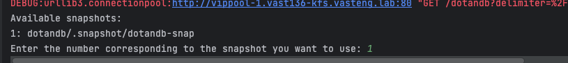

VastDB restore procedure#
Important
These instructions are BETA.
This document explains the steps involved in restoring a VastDB backup using the provided script. Below, we break down what the script does and how to use it effectively, along with usage examples.
Important
Note that database restore consume the SAME amount of storage space as the original database
Overview#
The provided script automates the process of restoring data from a VastDB snapshot to a new bucket in VastDB. It is divided into several key parts:
Configuration Setup: The script defines configuration settings such as VastDB endpoint, access keys, bucket names, and snapshot details using the Pydantic library. These settings are then used throughout the script to connect to the database and perform operations.
Logging and Debugging: Logging is set up to facilitate debugging, allowing you to monitor the script’s progress and identify any issues that arise.
Connecting to VastDB and DuckDB: The script establishes a connection to the VastDB instance using the provided configuration. It also connects to DuckDB, which is used later for querying the restored data.
Restoring Tables: The core function,
restore_table(), restores each table from the snapshot to the new bucket. It checks if the schema and tables already exist and creates them if they do not.Processing All Schemas: The function
process_all_schemas()iterates through all schemas in the snapshot and callsrestore_table()for each table within each schema.Executing Queries with DuckDB: After the data is restored, the script executes queries using DuckDB to verify the restored data.
Use-Case example#
Imagine a user managing a VastDB database for their organization’s data analytics. The database, named “solutions-analytics-db”, is critical for daily reporting. The user takes periodic snapshots of the database to ensure they have a reliable backup in case anything goes wrong. One day, due to a system error or accidental data corruption, the database becomes unusable, and they need to restore it to an earlier state. Fortunately, they have a recent snapshot called “daily-backup-2024-10-01”. The provided script allows the user to restore their database from this snapshot to a new bucket, enabling them to quickly get back to normal operations without losing much data.
Example Configuration#
Below is the configuration needed for the script:
# Define configuration directly using pydantic without relying on env variables
class ConsumeConfig(BaseSettings):
vastdb_endpoint: str = Field("http://example-vastdb-endpoint.com")
vastdb_access_key: str = Field("AKIAX1234567890EXAMPLE")
vastdb_secret_key: str = Field("wJalrXUtnFEMI/K7MDENG/bPxRfiCYEXAMPLEKEY")
vastdb_bucket: str = Field("solutions-analytics-db")
vastdb_new_bucket: str = Field("your-new-bucket-name")
Script Sections to Edit#
Example Configuration#
Here is an example of how the configuration should look like when properly filled out:
# Define configuration directly using pydantic without relying on env variables
class ConsumeConfig(BaseSettings):
vastdb_endpoint: str = Field("http://example-vastdb-endpoint.com")
vastdb_access_key: str = Field("AKIAX1234567890EXAMPLE")
vastdb_secret_key: str = Field("wJalrXUtnFEMI/K7MDENG/bPxRfiCYEXAMPLEKEY")
vastdb_bucket: str = Field("bucket1")
vastdb_snapshot: str = Field("bucket1/.snapshot/dotan-restore-bigdb")
vastdb_new_bucket: str = Field("your-new-bucket-name")
You need to update the following fields as per your environment:
vastdb_endpoint: The endpoint URL of your VastDB instance.vastdb_access_keyandvastdb_secret_key: Your VastDB access credentials.vastdb_bucket: The name of the bucket containing the snapshot.vastdb_new_bucket: The target bucket (VastDB) where the restored data will be placed.
One you fill all needed information you can run the script, The script will now search for avilble snapshots within the bucket and will prompt you to select the Snapshot you wish to restore from, select the desired snapshot and hit enter, the restore phase will now start.
##
## The actual script
##
import vastdb
import duckdb
import pandas as pd
from ibis import _
from pydantic import Field
from pydantic_settings import BaseSettings
import logging
import multiprocessing
from vastdb.util import expand_ip_ranges
# Setup logging for debugging
logging.basicConfig(level=logging.DEBUG)
logger = logging.getLogger(__name__)
# Define configuration directly using pydantic without relying on env variables
class ConsumeConfig(BaseSettings):
vastdb_endpoint: str = Field("http://vippool-1.vast136-kfs.VastENG.lab")
vastdb_access_key: str = Field("9xxxxxxxxxxffffffdeddddddd0")
vastdb_secret_key: str = Field("8xxxxxxxxxxxkkdjdjdkdxxxxxxxR")
vastdb_bucket: str = Field("dotandb")
vastdb_new_bucket: str = Field("dotandb-restored")
# Load configuration
config = ConsumeConfig()
# Log configuration values for debugging
logger.debug(f"Configured VASTDB endpoint: {config.vastdb_endpoint}")
logger.debug(f"Configured VASTDB access key: {config.vastdb_access_key}")
logger.debug(f"Configured VASTDB secret key: {config.vastdb_secret_key}")
logger.debug(f"Configured VASTDB bucket: {config.vastdb_bucket}")
logger.debug(f"Configured VASTDB new bucket: {config.vastdb_new_bucket}")
# Explicitly print endpoint value for direct verification
print(f"Using VASTDB endpoint: {config.vastdb_endpoint}")
# Attempt to connect to the VAST instance
try:
logger.debug("Attempting to connect to the VAST instance...")
logger.debug(f"Connecting to endpoint: {config.vastdb_endpoint}")
session = vastdb.connect(
endpoint=config.vastdb_endpoint,
access=config.vastdb_access_key,
secret=config.vastdb_secret_key
)
logger.info("Connection successful\!")
except vastdb.errors.ConnectionError as e:
logger.error(f"Failed to connect: {e}")
exit(1)
except Exception as e:
logger.error(f"An unexpected error occurred: {e}")
exit(1)
# Connect to DuckDB
logger.debug("Connecting to DuckDB...")
conn = duckdb.connect()
logger.info("Connected to DuckDB successfully.")
# Function to restore data for a single table
def restore_table(schema_name, table_name, snapshot, tx, config, restored_batches):
try:
logger.debug(f"Accessing schema '{schema_name}' and table '{table_name}'...")
get_table = snapshot.schema(schema_name).table(table_name)
table_schema = get_table.arrow_schema
batches = get_table.select()
restored_batches.append((table_name, batches))
logger.info(f"Successfully accessed table '{table_name}' from schema '{schema_name}' in the snapshot.")
logger.debug("Accessing the new bucket for restoration...")
restored_bucket = tx.bucket(config.vastdb_new_bucket)
# Check if the schema already exists
try:
logger.debug(f"Checking if schema '{schema_name}' exists...")
restored_schema = restored_bucket.schema(schema_name)
logger.info(f"Schema '{schema_name}' already exists. Using the existing schema.")
except vastdb.errors.MissingSchema:
logger.debug(f"Creating schema '{schema_name}'...")
restored_schema = restored_bucket.create_schema(schema_name)
logger.info(f"Created new schema '{schema_name}' for restoration.")
# Log table creation or usage
try:
logger.debug(f"Creating table '{table_name}'...")
restored_table = restored_schema.create_table(table_name, table_schema)
logger.info(f"Created new table '{table_name}' for restoration.")
except vastdb.errors.TableExists:
logger.debug(f"Table '{table_name}' already exists. Using the existing table...")
restored_table = restored_schema.table(table_name)
logger.info(f"Table '{table_name}' already exists. Using the existing table.")
logger.debug("Inserting data into the restored table...")
for batch in batches:
restored_table.insert(batch)
logger.info(f"Data restored successfully to table '{table_name}' in schema '{schema_name}'.")
except Exception as e:
logger.error(f"Failed to restore table '{table_name}' in schema '{schema_name}': {e}")
exit(1)
# Function to handle the restoration process for all schemas and tables
def process_all_schemas(snapshot, tx, config, restored_batches):
try:
logger.debug("Processing all schemas...")
schemas = snapshot.schemas()
for schema in schemas:
schema_name = schema.name
logger.debug(f"Processing schema '{schema_name}'...")
tables = schema.tables()
for table in tables:
table_name = table.name
restore_table(schema_name, table_name, snapshot, tx, config, restored_batches)
except Exception as e:
logger.error(f"Failed to process schemas: {e}")
exit(1)
# Step 1: Access the specified snapshot and restore all schemas and tables
restored_batches = []
with session.transaction() as tx:
try:
logger.debug("Accessing the bucket...")
bucket = tx.bucket(config.vastdb_bucket)
logger.debug("Listing available snapshots...")
available_snapshots = bucket.snapshots()
snapshot_names = [snap.name for snap in available_snapshots]
# Text-based selection of snapshot
print("Available snapshots:")
for idx, snap_name in enumerate(snapshot_names):
print(f"{idx + 1}: {snap_name}")
selected_index = int(input("Enter the number corresponding to the snapshot you want to use: ")) - 1
if selected_index < 0 or selected_index >= len(snapshot_names):
logger.error("Invalid selection.")
exit(1)
snapshot_name = snapshot_names[selected_index]
# Log that the snapshot is found
logger.debug(f"Snapshot '{snapshot_name}' found. Proceeding...")
logger.debug(f"Accessing snapshot '{snapshot_name}'...")
snapshot = next(snap for snap in available_snapshots if snap.name == snapshot_name)
# Process all schemas and tables
process_all_schemas(snapshot, tx, config, restored_batches)
except vastdb.errors.MissingSnapshot as e:
logger.error(f"Snapshot '{snapshot_name}' not found in bucket '{config.vastdb_bucket}': {e}")
exit(1)
except Exception as e:
logger.error(f"Failed to access snapshot or schemas: {e}")
exit(1)
# Step 3: Execute query using DuckDB and print the result
try:
logger.debug("Executing query using DuckDB...")
for table_name, batches in restored_batches:
for idx, batch in enumerate(batches):
batch_name = f"{table_name}_batch_{idx}"
conn.register(batch_name, batch)
result = conn.execute(f"SELECT \* FROM {batch_name}").fetch_arrow_table()
logger.debug(f"Query executed successfully for {batch_name}. Printing result...")
print(result)
logger.info("Data fetched and printed successfully.")
except Exception as e:
logger.error(f"Failed to execute query or fetch data: {e}")
exit(1)
Usage Example#
To run the script, you will need to:
Ensure Python Dependencies Are Installed: Install the required Python libraries using pip:
pip install vastdb duckdb pandas ibis pydantic logging
Run the Script: Execute the script using Python:
python restore_vastdb.py
Select desired Snapshot: to use from the list:

Check Logs: The script logs important information about the restore process. Use the logs to verify that the connection is established and that all tables are restored successfully.
Quick Usage Demo#
Key Functions Explained#
restore_table(schema_name, table_name, snapshot, tx, config)#
This function handles the restoration of a single table:
Connects to the specified schema and table in the snapshot.
Creates the schema and table in the target bucket if they do not exist.
Inserts data from the snapshot to the new table in the restored bucket.
process_all_schemas(snapshot, tx, config)#
This function iterates over all schemas in the snapshot and restores each table.
It uses
restore_table()to handle each table within a schema.
DuckDB Integration#
After restoring data, DuckDB is used to execute queries and print results, providing a way to verify that data restoration is successful.
Troubleshooting Tips#
Connection Errors: Ensure that the VastDB endpoint and credentials are correct. Check network connectivity if connection issues persist.
Missing Snapshot: Verify that the specified snapshot exists in the bucket by listing available snapshots in the logs.
Table Restoration Failures: Ensure that there are no conflicting table names or schema issues in the target bucket.